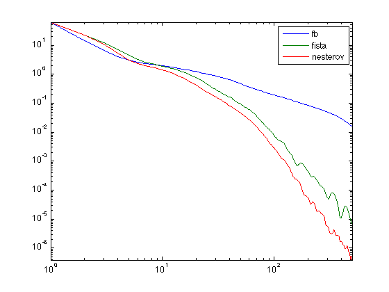

Basis Pursuit Denoising with Forward-Backward
Test the use of Forward-backward-like splitting for the resolution of a compressed sensing regularization.
addpath('../'); addpath('../toolbox/');
Dimension of the problem.
n = 600; p = n/4;
Regularization parameter.
lambda = 1;
Matrix and observation.
A = randn(p,n); y = randn(p,1);
List of benchmarked algorithms.
methods = {'fb', 'fista', 'nesterov'};
operator callbacks
F = @(x)lambda*norm(x,1); G = @(x)1/2*norm(y-A*x)^2;
Proximal operator of F.
ProxF = @(x,tau)perform_soft_thresholding(x,lambda*tau);
Gradient operator of G.
GradG = @(x)A'*(A*x-y);
Lipschitz constant.
L = norm(A)^2;
Function to record the energy.
options.report = @(x)F(x)+G(x);
Bench the algorithm
options.niter = 5000; E = []; for i=1:length(methods) options.method = methods{i}; [x,e] = perform_fb(zeros(n,1), ProxF, GradG, L, options); E(:,i) = e(:); end e = min(E(:));
[********************] [********************] [********************]
Display the decays of the energies.
IMPORTANT: Note that the comparison with Nesterov is unfair, since each Nesterov iteration cost twice more.
sel = 1:round(options.niter/10);
loglog(E(sel,:)-e);
axis tight;
legend(methods);
